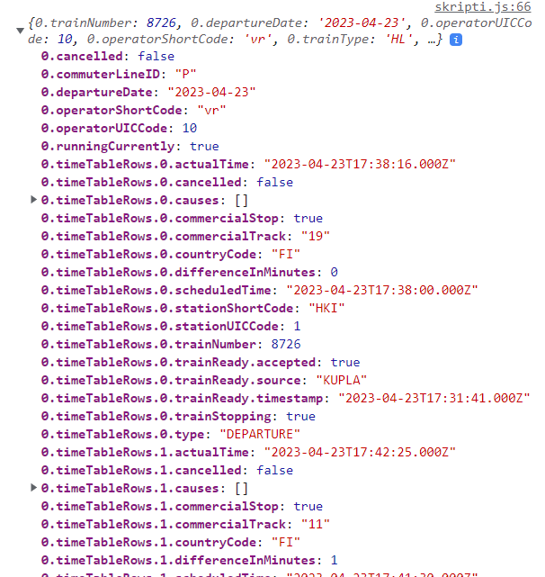

Käyttämäni data tulee digitrafficista, ohje on sivulla Liikennepaikan saapuvat ja lähtevät junat (lukumäärärajoitus) ja käytin JSONin poimimiseen melkein suoraan kolmatta esimerkkiä, vaihdoin vain asemakoodiksi Tikkurilan koodin TKL. Näin jälkikäteen ajatellen reittiperusteinen haku välille TKL-HKI olisi voinut olla järkevämpi. Siinä tosin olisi sitten taas ollut se ongelma, että olisi jotenkin pitänyt suodattaa kaikki kaukojunat pois, kun ei niihin pääse HSL-lipulla.
Löin päätäni seinään digitrafficin JSONin kanssa aika monta päivä ennen kuin ymmärsin, miksi mitkään esimerkit ja ohjeet eivät toimineet. Kyse ei ollutkaan minusta vaan datan muodosta. Kun ymmärtää, mitä JSONissa pitäisi lukea selviää sekin, miksi ei oikein toimi: JSONin sisällöstä puuttuu matriisien nimiä. Se alkaa suoraan näin:

Niin että viittaapa siihen sitten ja sen sisällä oleviin taulukoihin... Ymmärtääkseni koko ongelman alkusyyn jouduin itse asiassa palaamaan harjoitukseen 8.2 ja sen malliratkaisuun. Vasta kun kävin vertailemassa Dummyjsonin JSONia ja Digitrafficin JSONia, ymmärsin kunnolla, miksi en osaa soveltaa saamiani ja löytämiäni ohjeita jälkimmäiseen.
Lopulta löysin JavaScript-hilavitkuttimen nimeltä Flattener, joka tekee jsonista yksitasoisen ja numeroi tarvittaessa nimettömät matriisit. Hetki piti ihmetellä sitäkin, miten sen saa toimimaan, mutta siitä selvittiin tunnin pähkäilyllä. Lopputuloksena on sitten vähän toisenlainen JavaScript-objekti:
Tähän rakenteeseen pystyi sitten suhteellisen helposti rakentamaan loopin, jolla saa haettua junien numerot. Sen sijaan pidemmälle taitoni eivät riittäneet, kun Tikkurilan tiedot ovat eri junilla eri kohdissa litistetyssä tiedostossa ja olisi pitänyt loopin lisäksi ehkä rakentaa jonkinlaisia if-rakenteita ("jos se on K-juna ja se lähti Helsingistä, katso Tikkurilan lähtöaika riviltä n.jotakin.jotakin.jotakin").
Halusin kuitenkin näyttää, että teorian tasolla ymmärrän, miten JSON-tiedostosta saa poimittua tietoa ja tehtyä siitä HTML-sivun. Matkan varrella opin mm, että jos viittaaminen olisi onnistunut nimillä, olisin voinut käyttää .filteriä Tikkurilan tietojen kaivamiseen listasta. Lopullisen määränpään olisi saanut pyytämällä tietyn matriisin viimeistä riviä, tosin se olisi I- ja P-junien osalta vähän epäkätevää, kun ne molemmat menevät Helsinkiin, toinen päärataa ja toinen lentokentän kautta.
Täytyy myös tunnustaa, että ainakin puoli päivää meni sen keksimiseen, mitä ylipäänsä digitrafficilta sain. JSONissa on ihan oikein se mitä tilattiinkin eli seuraavat kymmenen Tikkurilaan tulevaa lähijunaa. Ne tulevat junanumeron mukaan, ei aikajärjestyksessä, ja listauksessa on ihan kaikki asemat, joilla juna käy, sekä saapumis- että lähtöajat näiltä asemilta. Yhden kiemuran aiheutti sekin, että aikaleimat ovat UTC-aikaa eli näin kesäaikaan niihin pitää lisätä kolme tuntia ja talviaikaan kaksi tuntia... On kuitenkin ihan mahdollista, että herra Googlella olisi ollut tähän ongelmaan ohjeita, jos niin pitkälle olisin koskaan päässyt.
Junan aikataulun mukainen lähtöaika Tikkurilasta on kohdassa n.timeTableRows.p.scheduledTime, kun
n.timeTableRows.p.stationShortCode on "TKL" ja n.timeTableRows.p. ja n.timeTableRows.p.type on
"DEPARTURE". n on 0-9 (koska junia tulee aina kymmenen), mutta p voi olla välillä 0-61.
p on kuitenkin samalla linjalla aina sama, koska ne tekevät aina saman määrän saapumisia ja lähtöjä,
joten tämän voisi ehkä ratkaista niinkin päin, että ensin tarkistaisi junan kirjaimen ja
sitten määrittäisi p:n arvon if-else if-else -lausekkeella ja vasta sen jälkeen tekisi jonkinlaisen
loopin tai looppeja. Tähän ei kuitenkaan aika ja taidot riittäneet.
Jos VR:n datassa olisi matriiseilla ja alimatriiseilla kaikilla kunnon nimet, olisi
tiedon onkiminen sisäkkäisistä matriiseista suhteellisen helppoa ihan pistenotaatiolla. Nyt
kompastuin vielä siihenkin, että flatTimes.0.commuterLineID ei toimi, koska siinä on numero (näin luin
myöhemmin), mutta flatTimes[0.commuterLineID] toimii. Aika monen parametrin testaamista sekin
kyllä vaati, mutta viiden päivän ähräyksen jälkeen oli hienoa saada ylipäänsä ulos ylipäänsä joku tieto...
Opin oikeasti matkan varrella aika paljon JSONista ja sen käsittelystä, mutta kun lähdetieto ei ollut ihan helpointa, niin lopputuloksessa ei ole paljon näytettävää. Uskon kuitenkin, että jos saisin sellaista JSONia kuin DummyJSONilla on tarjolla, saisin varsin vähällä vaivalla kirjoitettua siitä kaikenlaisia palveluita. Nyt vain suuret suunnitelmat eivät toteutuneet eikä tästä tullut sitä palvelua, jota itselleni haaveilin ihan käyttöön: Että näkisin nopeasti esimerkiksi seuraavat Tikkurilasta päärataa Helsinkiin menevät junat. Tietääkseni sellaista palvelua ei ole ja se olisi minulle hyvin tarpeellinen. Mutta ehkä joku päivä osaan ratkaista tämän ongelman. Tai sitten opettelen käyttämään sitä toista vaihtoehtoa eli GraphQL-rajapintaa, mutta sitä ei voinut tämän kurssin puitteissa käyttää.
Tiedon tulostaminen html-muotoon ja sivun muotoilu ovat tässä ne helpot asiat, todellinen haaste on se, että tiedon ensin saa järkevästi ulos noudetusta listasta. En tarvitse mitään visuaalisesti kovin hienoa enkä aio sellaista rakentaa, mutta jos olisin onnistunut tiedon hakemisessa, olisin rakentanut jotain vähän hienompaa. Esimerkiksi minulla voisi olla alasvetovalikko, jossa on "Tikkurilasta Helsinkiin", "Tikkurilasta Keravalle" (käytän tätä joskus Korsoon ja Keravaan), "Helsingistä Tikkurilaan" ja "Pasilasta Tikkurilaan", niin siinähän olisi kaikki meikäläisen tarpeet katettuna. Tai vain neljä nappia, se olisi vielä nopeampi käyttää kuin alasvetovalikko. Tämä käyttöliittymäsuunnittelu on kuitenkin edessä vasta sitten, kun saan sisään oikeasti sellaista dataa kuin haluan.
Virallisen jättöpäivän jälkeisellä luennolla katsoimme jQueryä. Täytyy tutkia, löytyykö siitä ratkaisu ongelmaan, on aina mahdollista, että sitä kautta saa uusia työkaluja. Jos saisin palvelun toimimaan, minulla olisi oikeasti sille käyttöä!